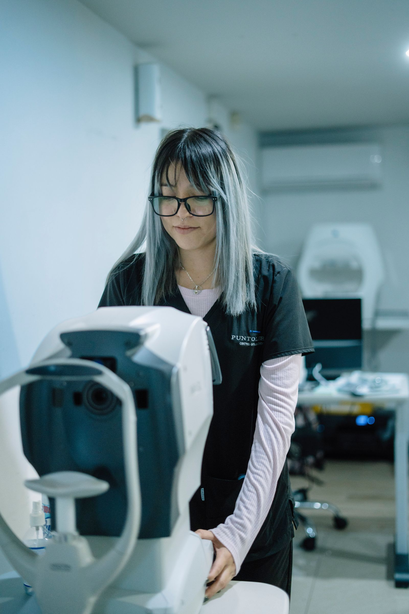
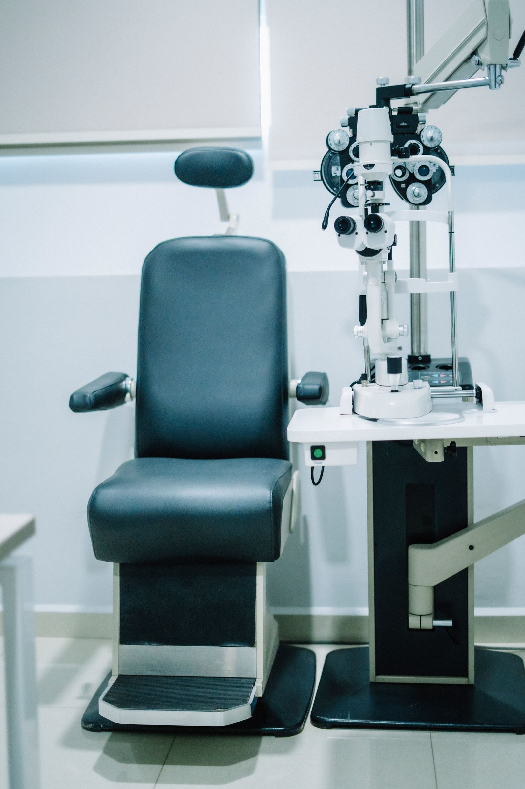
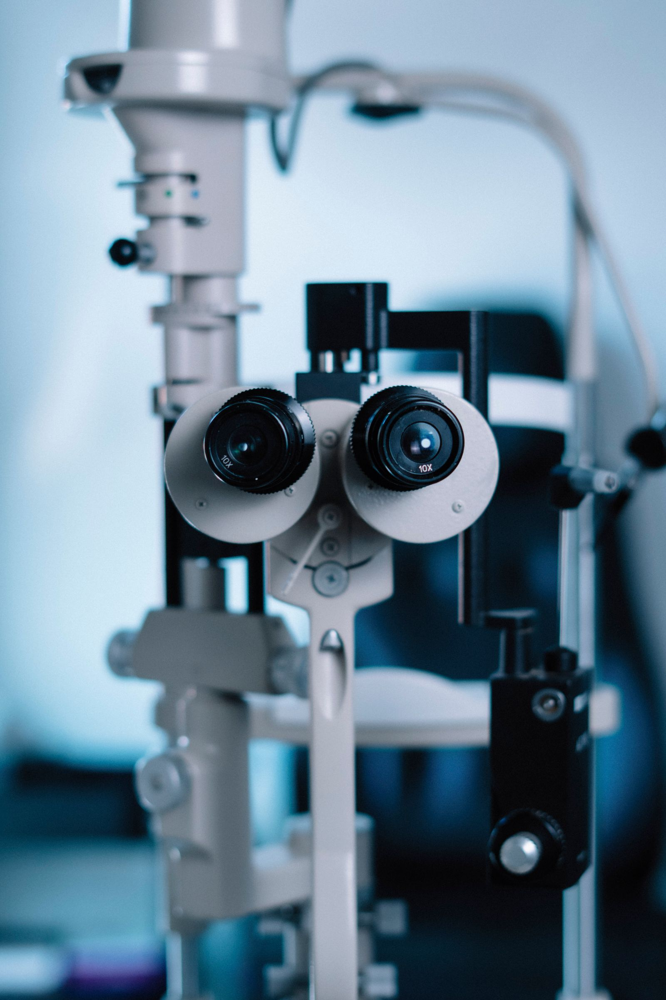
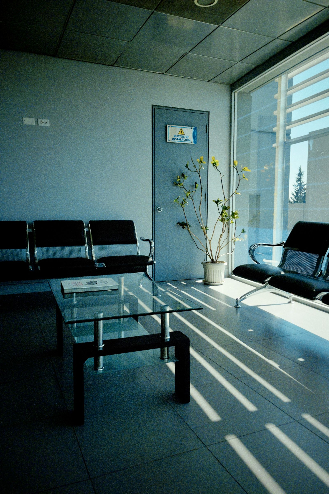
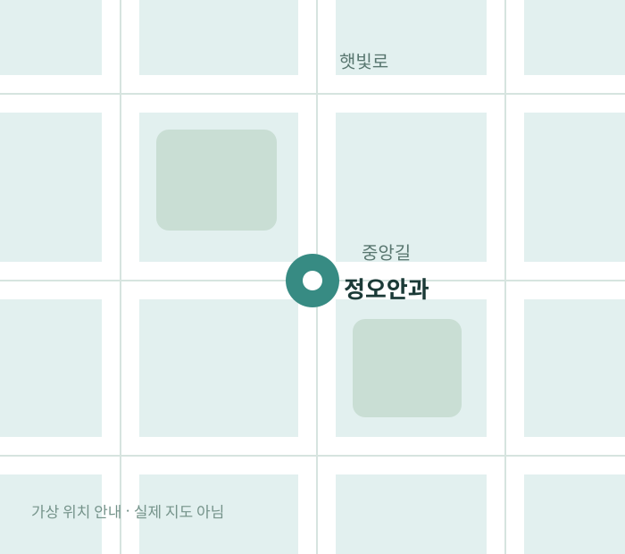

일반 안과 진료
시력 변화 · 건조감 · 눈의 불편감
원장 소개 DIRECTOR
시력 변화, 건조감처럼 일상에서 느끼는 불편함을 먼저 듣고 필요한 검사와
다음 단계를 설명하는 진료를 생각합니다.
한서윤은 가상 인물입니다. 자격·학력·경력 정보는 제시하지
않습니다.
정오의 진료 OUR CARE

시력 변화 · 건조감 · 눈의 불편감
현재 상태를 살펴보고 다음 단계를 안내합니다.
예약 및 진료는 운영하지 않는 시안입니다.일상의 변화를 이해하는 첫 단계

사진은 실제 정오안과 시설이 아닙니다.
진료 안내 VISIT PREPARATION
평일과 토요일의 운영 시간이 다릅니다. 진료를 위한 방문은 이 가상 사이트에서 접수되지 않습니다.
이 페이지의 의료 정보는 일반적인 화면 구성 예시입니다.
진료 분야 OUR SERVICES

변화를 확인하는 기본 검사
불편감의 양상 확인
검사 계획과 결과 안내

필요한 다음 단계 안내
가상 사업체 웹사이트 구성 예시입니다.
정오 소식 NEWS
방문 안내 VISIT GUIDE
실제 방문·전화·예약은 연결되지 않습니다.
